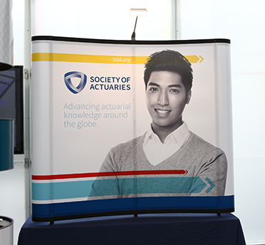
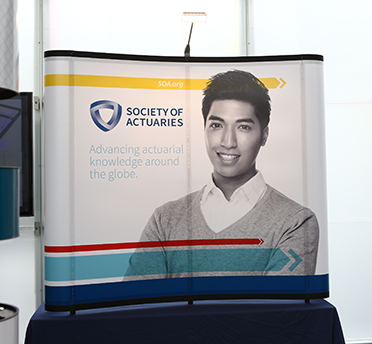

Case Study: Brand
Society of Actuaries
The Society of Actuaries is the leading global professional actuarial organization, cultivating professionals that organizations trust to positively impact business and society--highly skilled, forward-thinking actuaries.
The Challenge
To launch a strong identity program that would stand out in the competitive landscape and express the importance of the Society of Actuaries' position in society.
Solution
To launch and introduce a new logo and identity positioning the Society of Actuaries as the global leader in its field.
By conducting research and analysis about the Society of Actuaries, creating a positioning statement, brand essence, and attributes, we were able to create a logo and indentity that accomplished all of our goals.
 
